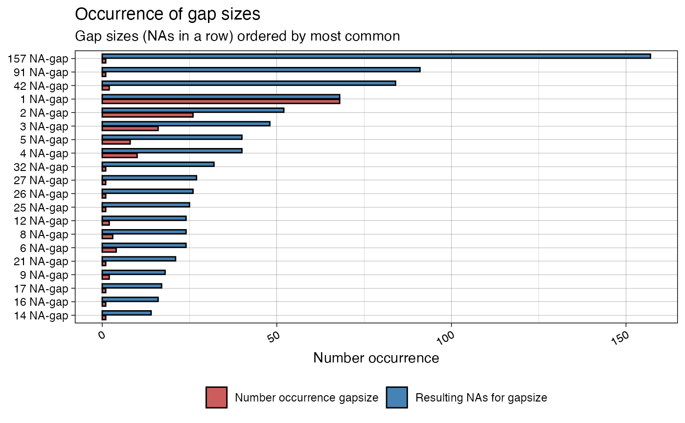
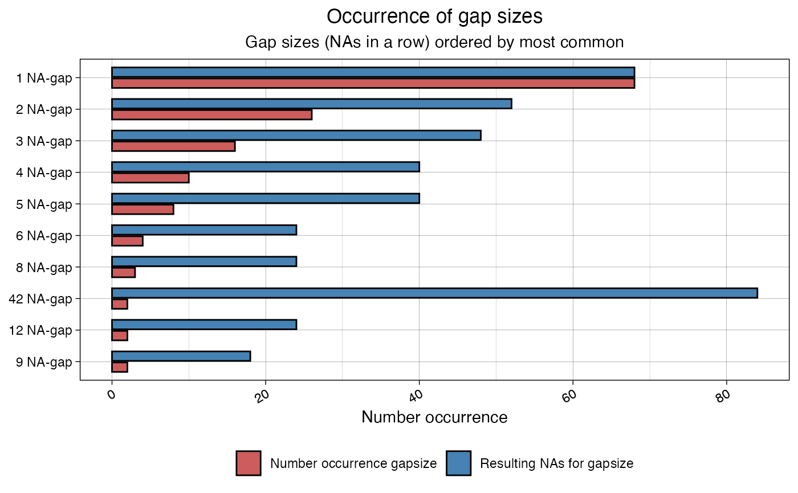
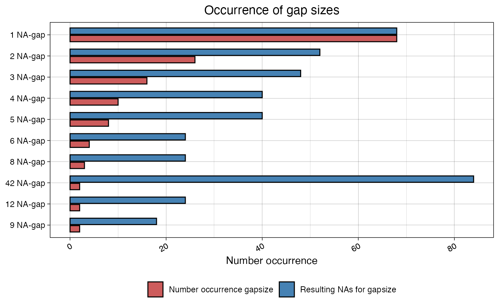

Visualize the Number of Occurrences for existing NA Gap Sizes (NAs in a row) in a Time Series
ggplot_na_gapsize( x, limit = 10, include_total = TRUE, ranked_by = "occurrence", color_occurrence = "indianred", color_total = "steelblue", title = "Occurrence of gap sizes", subtitle = "Gap sizes (NAs in a row) ordered by most common", xlab = NULL, ylab = "Number occurrence", legend = TRUE, orientation = "horizontal", label_occurrence = "Number occurrence gapsize", label_total = "Resulting NAs for gapsize", theme = ggplot2::theme_linedraw() )
Arguments
| x | Numeric Vector ( |
|---|---|
| limit | Specifies how many of the most common gap sizes are shown in
the plot.Default is 10. So only the 10 most often occurring gapsizes will
be shown. If more or all present gap sizes should be displayed, the limit needs
to be increased. Since this might add a lot of additional data, having
parameter |
| include_total | When set to TRUE the total NA count for a gapsize is included in the plot (total = number occurrence x gap size). E.g. if a gapsize of 3 occurs 10 times, this means this gap size makes up for 30 NAs in total. This can be a good indicator of the overall impact of a gapsize. |
| ranked_by | Should the results be sorted according to the number of occurrence or total resulting NAs for a gapsize. Total resulting NAs are calculated by (total = number occurrence x gap size).
The default setting is "occurrence". |
| color_occurrence | Defines the Color for the Bars of 'number of occurrence'. |
| color_total | Defines the color for the bars of 'total resulting NAs'. |
| title | Title of the Plot. |
| subtitle | Subtitle of the Plot. |
| xlab | Label for x-Axis. |
| ylab | Label for y-Axis. |
| legend | If TRUE a legend is added at the bottom. |
| orientation | Can be either 'vertical' or 'horizontal'. Defines
if the bars are plotted vertically or horizontally. For large amounts
of different gap sizes horizontal illustration is favorable (also see
parameter |
| label_occurrence | Defines the label assigned to 'number of occurrence' in the legend. |
| label_total | Defines the label assigned to 'total resulting NAs' in the legend. |
| theme | Set a Theme for ggplot2. Default is ggplot2::theme_linedraw().
( |
Value
The output is a ggplot2 object that can be
further adjusted by using the ggplot syntax
Details
This plotting function can be used to visualize the length of the NA gaps (NAs in a row) in a time series. It shows a ranking of which gap sizes occur most often. This ranking can be ordered by the number occurrence of the gap sizes or by total resulting NAs for this gap size (occurrence * gap length). A NA-gap of 3 occuring 10 times means 30 total resulting NAs.
A resulting plot can for example be described like this: a 2 NA-gap (2 NAs in a row) occurred 27 times, a 9 NA-gap (9 NAs in a row) occurred 11 times, a 27 NA-gap (27 NAs in a row) occurred 1 times, ...
The only really needed parameter for this function is x (the univariate time series with NAs that shall be visualized). All other parameters are solely for altering the appearance of the plot.
As long as the input is univariate and numeric the function also takes data.frame, tibble, tsibble, zoo, xts as an input.
The plot can be adjusted to your needs via the function parameters. Additionally for more complex adjustments, the output can also be adjusted via ggplot2 syntax. This is possible, since the output of the function is a ggplot2 object. Also take a look at the Examples to see how adjustments are made.
See also
Author
Steffen Moritz, Sebastian Gatscha
Examples
# Example 1: Visualize the top gap sizes in tsNH4 (top 10 by default) ggplot_na_gapsize(tsNH4)# Example 2: Visualize the top gap sizes in tsAirgap - horizontal bars ggplot_na_gapsize(tsAirgap, orientation = "vertical")# Example 3: Same as example 1, just written with pipe operator tsNH4 %>% ggplot_na_gapsize()# Example 4: Visualize the top 20 gap sizes in tsNH4 ggplot_na_gapsize(tsNH4, limit = 20)# Example 5: Visualize top gap sizes in tsNH4 without showing total NAs ggplot_na_gapsize(tsNH4, limit = 20, include_total = FALSE)# Example 6: Visualize top gap sizes in tsNH4 but ordered by total NAs # (total = occurrence * gap length) ggplot_na_gapsize(tsNH4, limit = 20, ranked_by = "total")# Example 7: Visualize top gap sizes in tsNH4 - different theme # Plot adjustments via ggplot_na_gapsize function parameters ggplot_na_gapsize(tsNH4, theme = ggplot2::theme_classic())# Example 8: Visualize top gap sizes in tsNH4 - title, subtitle in center # Plot adjustments via ggplot2 syntax ggplot_na_gapsize(tsNH4) + ggplot2::theme(plot.title = ggplot2::element_text(hjust = 0.5)) + ggplot2::theme(plot.subtitle = ggplot2::element_text(hjust = 0.5))# Example 9: Visualize top gap sizes in tsNH4 - title in center, no subtitle # Plot adjustments via ggplot2 syntax and function parameters ggplot_na_gapsize(tsNH4, subtitle = NULL) + ggplot2::theme(plot.title = ggplot2::element_text(hjust = 0.5))# Example 10: Top gap sizes in tsNH4 - legend on the right and color change # Plot adjustments via ggplot2 syntax and function parameters ggplot_na_gapsize(tsNH4, color_total = "grey") + ggplot2::theme(legend.position = "right")